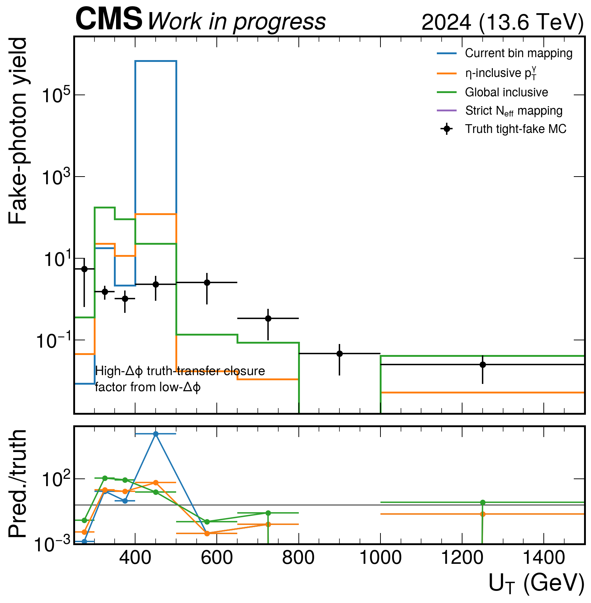
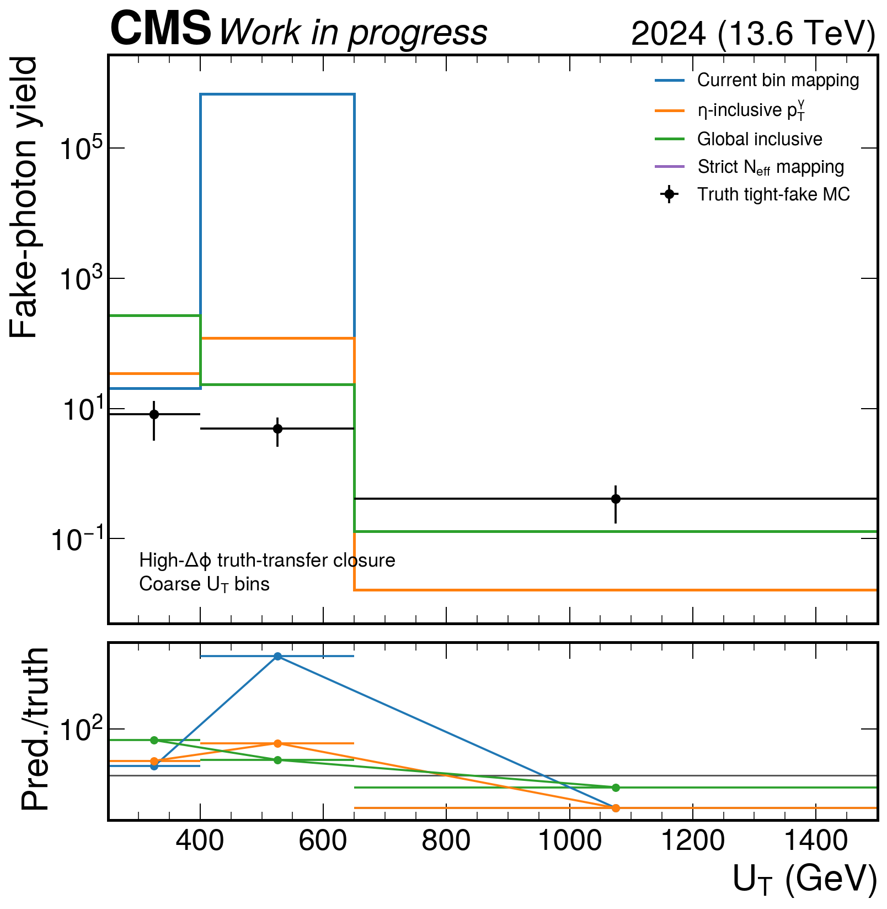
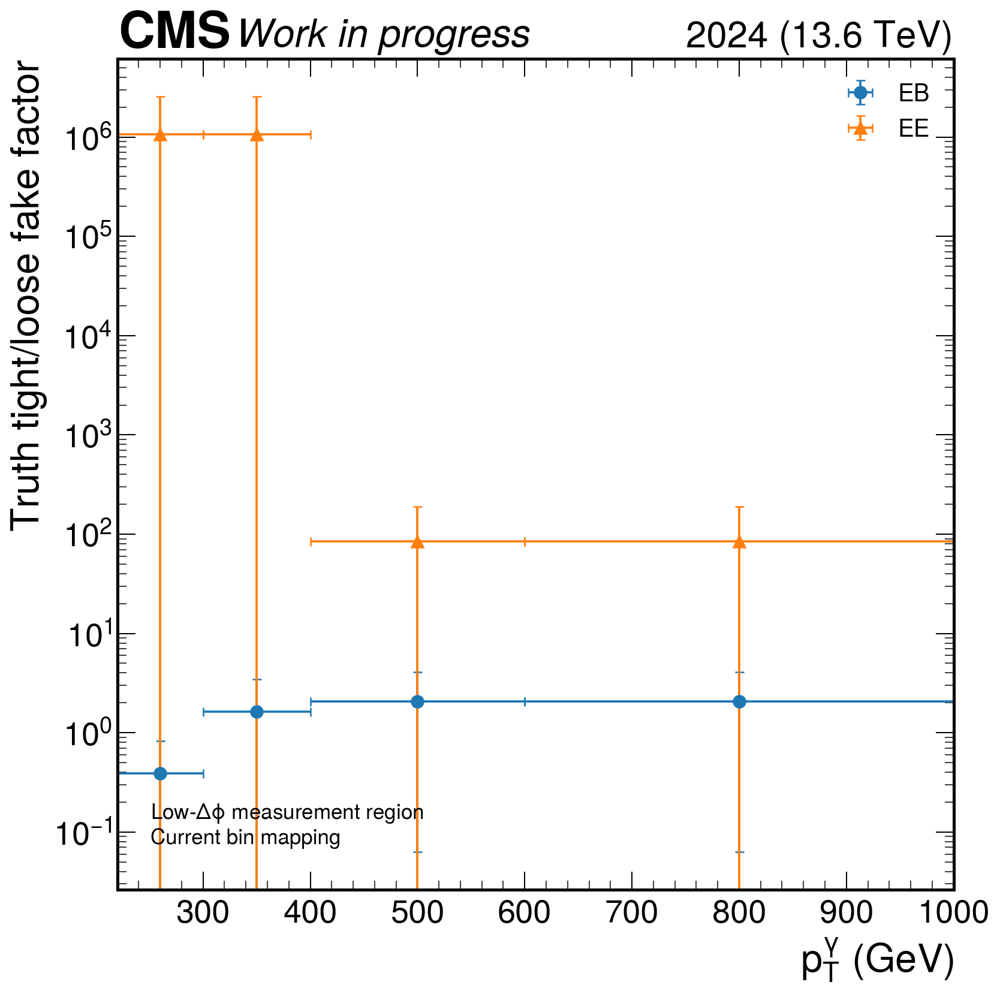

Diagnostic only. Template fits are not used. Nominal intermediates are unchanged.
The fake factor is measured from truth-fake MC in GCR_DPhiVR_Low and applied to truth-fake loose-not-medium photons in GCR_DPhiVR_High.
| Mapping | Prediction | Truth | Pred./truth | Loose coverage |
|---|---|---|---|---|
| current_mapping | 682148 | 13.3923 | 50935.894157394876 | 1.0 |
| eta_inclusive | 156.435 | 13.3923 | 11.680996623636286 | 1.0 |
| global_inclusive | 293.856 | 13.3923 | 21.94221040549717 | 1.0 |
| strict_stable | 0 | 13.3923 | 0.0 | 0.0 |



| Group | Factor | Tight Neff | Loose Neff | Stable |
|---|---|---|---|---|
| ALL_inclusive | 16.104264049366396 | 1.39 | 1.96 | False |
| EB_inclusive | 2.06183673143374 | 4.41 | 1.4 | False |
| EB_pt220to300 | 0.38842589482400314 | 3.47 | 1.01 | False |
| EB_pt220to400 | 1.6223028646499913 | 2.44 | 1.13 | False |
| EB_pt300to400 | 21.988699730565973 | 1.52 | 2.05 | False |
| EB_pt400to600 | 5.073521733317583 | 2.79 | 3.76 | False |
| EB_pt400toinf | 5.924614330156954 | 3.89 | 4.02 | False |
| EB_pt600toinf | 29.23072767173513 | 2.35 | 1.44 | False |
| EE_inclusive | 84.92655462485307 | 1.12 | 1.57 | False |
| EE_pt220to300 | 1015668.5340832422 | 1 | 1 | False |
| EE_pt220to400 | 1071891.247397688 | 1.11 | 1 | False |
| EE_pt300to400 | None | 2 | 0 | False |
| EE_pt400to600 | 0.018274470164729453 | 1.82 | 1.45 | False |
| EE_pt400toinf | 0.055438852549861306 | 3.46 | 1.57 | False |
| EE_pt600toinf | 0.9204970278841228 | 2 | 1 | False |